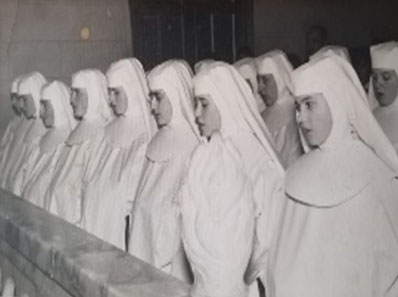
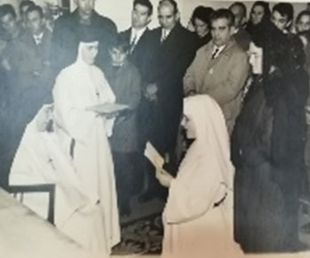
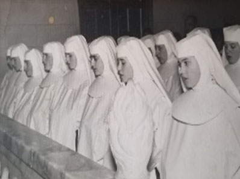
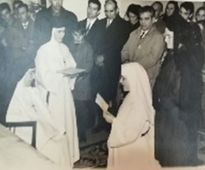

Fundación
Contexto Histórico
El 18 de julio de 1936 estalla la guerra. Durante este tiempo de violencia Esperanza experimenta la represión, vive de cerca el miedo, el odio, las venganzas en sus convecinos. También experimenta el cariño, la ayuda y protección de algunas personas cercanas que le ayudan, en ellas Esperanza ve la mano amiga de Dios. “Dios me guardó, nadie me hizo ningún mal. En este tiempo de guerra me dediqué más a orar” En este tiempo de guerra, Esperanza sufre de manera indecible. Experimenta con claridad que el hombre, hijo de Dios, sin su gracia, puede llegar a ser peor que un monstruo. Y en este ambiente de violencia siente una llamada especial. “No lo veía todo perdido, al contrario en Dios se puede rehacer todo. Dios me dio la idea de que yo podía hacer algo… y me pidió fundar la Congregación… Misionera y Mariana”
Primeras Señales
La empresa no es fácil y asusta a Esperanza. Sufre una lucha interior y el miedo se apodera de ella. “Mi poca generosidad y el no confiar totalmente en Dios, el miedo a un conjunto de cosas, me hacía no tener ningún deseo de hablar del asunto con nadie... pasé grandes luchas…Sufría por querer hacer lo que Dios quería y en lugar de esperarlo todo de El me quedaba en mi nada” A los pocos meses de tener la idea de fundar, todavía en período de guerra, Esperanza es visitada por Adelina Malo, quien le relata un sueño en el que ve la Fundación de la Congregación y en la que ella también se siente involucrada. Y aunque en un principio Esperanza intenta eludir la idea, esto ilumina su camino en la búsqueda de la voluntad de Dios. La situación de la guerra impide llevar a cabo todo esto. En cuanto puede comienza a dar los primeros pasos. En Lanaja pretende hablar con el párroco y le escribe una carta. “Al día siguiente de entregarle la carta, me llamó diciéndome que era de Dios que no me preocupara y estuviera tranquila..”. El párroco, D. Antonio Torres, le relató cómo, años atrás, ante las dudas y dificultades que tenía en aceptar el cargo de Párroco de Lanaja, un monje le animó a hacerlo: tenía que ayudar a una joven que iba a fundar una Congregación religiosa. Acompañada por el Párroco de Lanaja, Esperanza fue a comunicar al Señor Obispo esta inquietud, segura de que iba a ser rechazada. D. Lino Rodrigo Ruesca la escuchó en presencia de su confesor el P. Monreal, superior de los jesuítas. “Después de decirlo todo, me dijo el Sr. Obispo: "empiece, a ver lo que hace”. En este momento recibí una fuerza sobrenatural. Creo que fue fuerza de Dios. Nada se me puso por delante... “ A partir de este momento, aunque vivían cada una en su casa, Adelina y Esperanza comienzan a trabajar juntas en labores parroquiales y promoción de la mujer. “Pasábamos algún rato juntas…hablábamos de Dios… Algunas de las jóvenes que antes venían a trabajar conmigo, venían ahora a la casa parroquial donde les enseñábamos bordado, corte y confección y les hablábamos de Dios.”
Historia De La Congregación
En Lanaja, en casa Cavero, se inician los primeros pasos de la Congregación “Misioneras de Ntra. Sra. del Pilar”. En 1940 se abre una comunidad en Alcubierre. Y en 1944, a instancias del Sr. Obispo la comunidad de Alcubierre se trasladó a Huesca. En 1946 se constituyó en Pía Unión. “Abrimos una casa en Alcubierre cerca de Lanaja... Más tarde el Sr. Obispo me dijo que nos convenía venir a Huesca para que nos conocieran más, y para la mejor formación de las que entraran; tuvimos que cerrar Alcubierre. Por un tiempo se hospedan en casa de las hermanas Redondo. Al fin encuentran un piso del pasaje Avellanas... “Todo era puro amor de Dios, nos llevaba más hacia El... Para entonces ya había alguna hermana más en la comunidad. Además del apostolado, que ya realizaban en Lanaja, comenzaron a trabajar en la clínica del Dr. Cardús. “Vestíamos de negro y muy largo y para ir a Misa con velo tupido y mantilla.”
Primeras Comunidades
Hasta el 27 de julio de 1962 en que la Pía unión fue constituida en Congregación de derecho diocesano, el número de Hermanas había aumentado hasta 153, en 13 comunidades extendidas por Aragón, Navarra y La Rioja. La respuesta de las religiosas era generosa. La gente de los pueblos las acogía muy bien. Y Dios les iba ayudando. Esperanza emitió sus votos perpetuos el 2 de agosto de 1962 en manos del Sr. Obispo D. Lino Rodrigo Ruesca. En este acto recibió el Nombramiento de Superiora General de la Congregación. “Cuando la Iglesia nos constituyó como congregación religiosa de derecho diocesano, sentí mucho agradecimiento a Dios y a la Iglesia. Siempre me había considerado hija de la Iglesia, quería vivir como tal...”
LA CONGREGACIÓN SE VA EXTENDIENDO MÁS ALLÁ DE LAS FRONTERAS DE NUESTRO PAÍS.
El hecho fundacional. Carisma.
-Germen de comunidad-
El día 29 de octubre de 1939, festividad de Cristo Rey, con el beneplácito del Obispo, D. Lino, comienzan Esperanza, Adelina y Francisca a vivir en comunidad. “Escogimos el día de Cristo Rey porque queríamos que Cristo reinase en los corazones de los hombres y en todos los rincones de la tierra... A los pocos días quedamos dos, pues la familia de Francisca, se la llevó. No por eso decayeron nuestros ánimos.” Las dificultades y contrariedades no eran pocas, pero se afrontaban con alegría. Ellas las vivían como si de un sello de Dios se tratara. “Esto nos animaba mucho… Vivíamos contentas, gozosas y felices, porque nuestro único deseo era ser Cristo... Nuestra preocupación era que todos los hombres conocieran y amaran a Dios.” A partir de este momento su vida interior cobra nueva dimensión. Se ve adherida a la obra salvadora de Cristo hasta identificarse con El. “Mi compromiso, mis relaciones con el mundo, con todos los hombres, ya no podían ser otras que las que había adquirido el VERBO al Encarnarse y habitar entre nosotros... Yo tenía que desaparecer y tenía que aparecer en mí Cristo. Yo tenía que trasparentarlo hasta el detalle... mi vida había de ser Cristo.” Este ser Cristo se concretaba en una actitud de confianza y abandono en Dios Padre, que alimentaban con la oración y les empujaba a estar atentas y dispuestas ante las necesidades de la gente. Compartían esta experiencia de Dios y decidían juntas qué servicios realizar en el pueblo.
“Lo esperábamos todo de Él… Nunca nos faltó lo indispensable para la vida y aún sobraba para ayudar a la gente pobre"